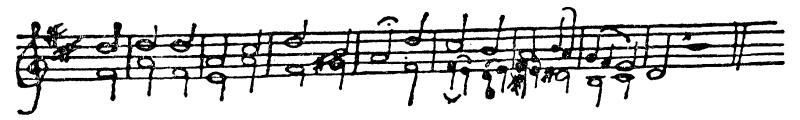

致玛丽亚·恩格斯
巴门
[1838年12月底于不来梅]
第一次发表于1920年《德意志评论》杂志第4卷（斯图加特和莱比锡）
原文是德文
亲爱的玛丽亚：
你对疾病也太认真了，稍有不适，你这个懒骨头就躺在床上，这个习惯要改变。收到这封信时，你应该下床了，听见没有？谢谢你给我的漂亮的绣花包：我可以肯定地告诉你，它已经得到最严格的评论家之一、画家G.W.法伊斯特科恩先生的最高评价，不论是图案的选择还是做工，他都十分赞赏。玛丽·特雷维腊努斯也给我绣了一个，不过后来她又拿回去寄往克罗茨纳赫附近的施泰因山麓明斯特，送给赫塞尔牧师先生了，因为她也答应过给他绣一个。为此，她正给我编一个装雪茄的小篮子。牧师太太FN1给我编织了一个小钱包。洛伊波尔德的男孩们也得到了用纸炮打响的枪和马刀，老头儿FN2总是对孩子们说：“唉，你这个好打架的家伙！”“你这个卡舒布人！”关于池塘的谜语，我不知道，我另外给你一个谜语——你知道Ledschiak是什么意思吗？（我自己也不知道，这是骂人的话，老头儿经常讲的。）FN3谜底是：如果你猜不出来，那么就把这个词对着镜子看，然后你就能够读出来了。我刚刚知道洛伊波尔德家添了一口人：一个女孩。
我还想告诉你，我正在谱曲，而且是谱写赞美诗。但是这件事可难了：节拍、升半音以及和声带来很多麻烦。到目前为止，我的进展还不大，但还是想给你看一段样品。这是赞美诗的前两行：“我们的上帝，强大的堡垒。”FN4

我还不能写出两个声部以上的曲调，因为四个声部的太难了。但愿乐谱中没有错误，你有功夫试着弹弹这个曲子。
AdieuFN5，亲爱的玛丽亚。
你的哥哥 弗里德里希
脚 注
FN1 玛蒂尔达·特雷维腊努斯。——编者注
FN2 亨利希·洛伊波尔德。——编者注
FN3 在原著中，括号里的句子是对着镜子以次序相反的字母写的。——编者注
FN4 这是马丁·路德的教堂赞美诗的头两行。——编者注
FN5 再见。——编者注